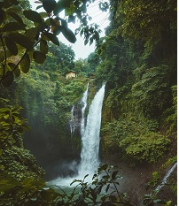
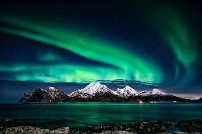
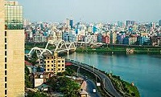

Impressive Nature
Nature is the most precious gift of God to us. Nature is like our mother; it nourishes and nurtures us. All our basic necessities are fulfilled by nature. Whether it’s the air we breathe, the land we live, the water we drink or the food we eat, it all comes from nature. God has only gifted earth with nature; that’s why life is possible on earth. Without nature, the existence of living things would not be possible.
Mountain Fountain
"The Mountain Fountain is a Colorado-Made Country Store. The store, built in 1945 and originally the Clark Food Store, is located in the town of Hygiene, Colorado and has recently reopened as The Mountain Fountain. Without changing any of the original.All our basic necessities are fulfilled by nature. Whether it’s the air we breathe, the land we live, the water we drink or the food we eat, it all comes from nature. God has only gifted earth with nature; that’s why life is possible on earth. Without nature, the existence of living things would not be possible.
Norway Amazing Sky
Here’s where it gets really interesting: When the particles meet the Earth’s magnetic shield, they are led towards an oval around the magnetic North Pole where they interact with the upper parts of the atmosphere, the layers of ozone, oxygen, and other stuff that protect the earth.
Open Sky and Sea beach
Bangladesh, to the east of India on the Bay of Bengal, is a South Asian country marked by lush greenery and many waterways. Its Padma (Ganges), Meghna and Jamuna rivers create fertile plains, and travel by boat is common. On the southern coast, the Sundarbans, an enormous mangrove forest shared with Eastern India, is home to the royal Bengal tiger
We love our country
Whatever our country has, we have no claim, no argument agaisnt our country but, only thing is that is dirty political system in our sub-continental countries like Bangladesh, India, Pakistan and others. No one thinks of this small land how we can progress. One the other hand, everyone tries how to have the countries with wrong doing things
Despite all of this problem, we love our country
Why do people go abroad?
Now a days, we badly noticed that, many of our sorrounding from relatives, friends, cousins, neighbour go to foreign country to work. Though we have gained our Independence in 1971, but financially we are not free from our system
Curzon Hall
The Curzon Hall is a British Raj-era building and home of the Faculty of Sciences at the University of Dhaka. The building was originally intended to be a town hall and is named after Lord Curzon, the Viceroy of India